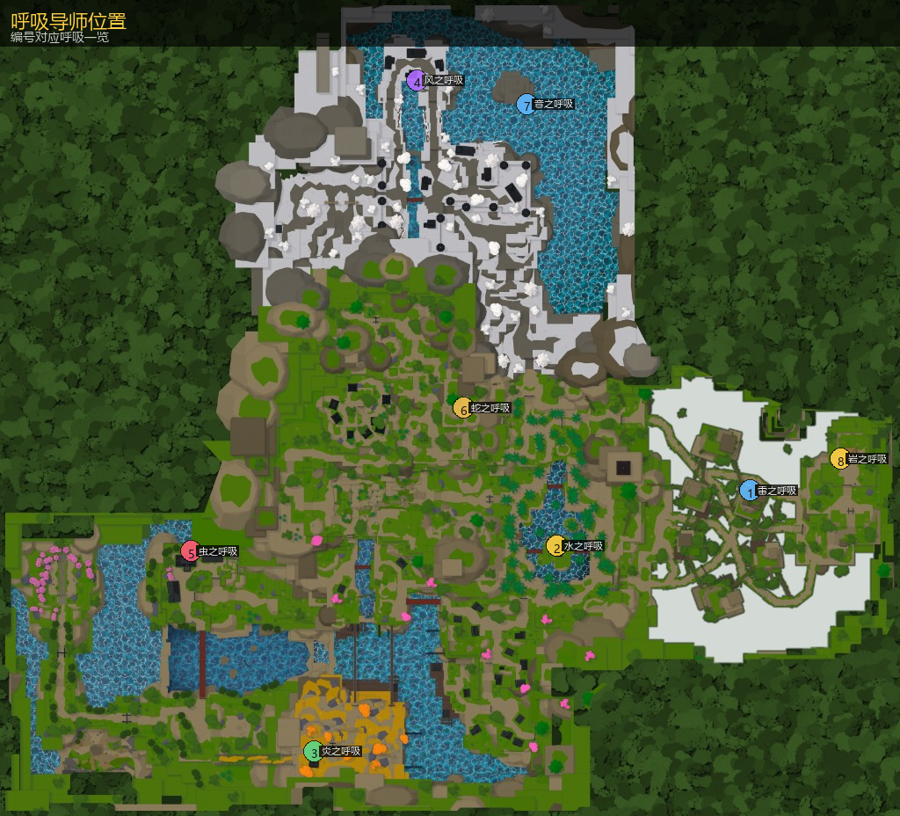

主页 / 呼吸法
呼吸法
八大呼吸均 Lv25 起接取。导师位置见下图（取对应世界柱坐标）。消耗鬼角 / 兽核与文后完成锻炼链并击败 Trainee。

| 流派 | 导师 | 文 | 材料 |
|---|
| 雷之呼吸 | Thunder Trainer Zentaro | 7000 | 鬼角×10 |
| 水之呼吸 | Water Trainer Urokodaki | 5000 | 鬼角×30 |
| 炎之呼吸 | Flame Trainer Rengu | 6000 | 鬼角×10 |
| 风之呼吸 | Wind Trainer Saneri | 3000 | 鬼角×50 |
| 虫之呼吸 | Insect Trainer Shinora | 3500 | 鬼角×15 + 兽核×3 |
| 蛇之呼吸 | Serpent Trainer Obari | 1000 | 鬼角×20 + 兽核×5 |
| 音之呼吸 | Sound Trainer Tengai | 4000 | 鬼角×10 + 兽核×3 |
| 岩之呼吸 | Stone Trainer Gyorei | 4000 | 兽核×4（需斧锤） |

雷之呼吸
导师 Thunder Trainer Zentaro · Lv25 · 鬼角×10 · 7000 文
Trainer Thunder Trainer Zentaro · Lv25 · 鬼角×10 · 7000 Wen
活动区坐标（柱/Boss 点）1332.1, 821.5, -1017.6 · Boss 页
解锁任务步骤
- 冥想
- 杯戏
- 俯卧撑
- 瞄准射击
- 劈石
- 击败 ThunderTrainee
技能数据
| 键 | 名称 | 体力 | CD | 备注 |
|---|
F | Blocking | — | 1 | — |
Z | Thunder Clap and Flash | 14 | 12 | 硬直 |
X | Lightning Fold | 18 | 13 | — |
C | Rice Spirit | 24 | 17 | 硬直 |
V | Godspeed | 26 | 18 | — |
B | Flaming Thunder God | 35 | 50 | 额外伤害倍率 +0.24 |
水之呼吸
导师 Water Trainer Urokodaki · Lv25 · 鬼角×30 · 5000 文
Trainer Water Trainer Urokodaki · Lv25 · 鬼角×30 · 5000 Wen
活动区坐标（柱/Boss 点）388.9, 1018.0, -85.1 · Boss 页
解锁任务步骤
- 跑酷地牢
- 俯卧撑
- 推石
- 瞄准射击
- 水下岩石
- 击败 WaterTrainee
技能数据
| 键 | 名称 | 体力 | CD | 备注 |
|---|
F | Blocking | — | 1 | — |
Z | Water Surface Slash | 14 | 10 | 硬直 |
X | Whirl Pool | 18 | 13 | 额外伤害倍率 +0.5 · 硬直 |
C | Water Wheel | 24 | 16 | — |
V | Constant Flux | 26 | 18 | 硬直 |
B | Dead Calm | 35 | 50 | 额外伤害倍率 +0.5 · 硬直 |
炎之呼吸
导师 Flame Trainer Rengu · Lv25 · 鬼角×10 · 6000 文
Trainer Flame Trainer Rengu · Lv25 · 鬼角×10 · 6000 Wen
活动区坐标（柱/Boss 点）-712.9, 965.0, 883.8 · Boss 页
解锁任务步骤
- 冥想
- 俯卧撑
- 劈石
- 瞄准射击
- 杯戏
- 击败 FlameTrainee
技能数据
| 键 | 名称 | 体力 | CD | 备注 |
|---|
F | Blocking | — | 1 | — |
Z | Unknowing Fire | 22 | 17 | 硬直 |
X | Blazing Universe | 18 | 14 | — |
C | Flame Undulation | 24 | 15 | 反击×2 |
V | Flame Tiger | 26 | 20 | 硬直 |
B | Purgatory | 35 | 50 | — |

风之呼吸
导师 Wind Trainer Saneri · Lv25 · 鬼角×50 · 3000 文
Trainer Wind Trainer Saneri · Lv25 · 鬼角×50 · 3000 Wen
活动区坐标（柱/Boss 点）-379.1, 1093.5, -422.4 · Boss 页
解锁任务步骤
- 俯卧撑
- 劈石
- 推石
- 瞄准射击
- 冥想
- 击败 WindTrainee
技能数据
| 键 | 名称 | 体力 | CD | 备注 |
|---|
F | Blocking | — | 1 | — |
Z | Mountain Wind | 18 | 13 | — |
X | Purifying Claws | 18 | 12 | — |
C | Rising Dust Storm | 28 | 18 | 额外伤害倍率 +0.3 |
V | Whirlwind Cutter | 26 | 17 | — |
B | Idaten Typhoon | 35 | 50 | 额外伤害倍率 +0.32 |

虫之呼吸
导师 Insect Trainer Shinora · Lv25 · 鬼角×15 + 兽核×3 · 3500 文
Trainer Insect Trainer Shinora · Lv25 · 鬼角×15 + 兽核×3 · 3500 Wen
活动区坐标（柱/Boss 点）-452.6, 964.5, 2.1 · Boss 页
解锁任务步骤
- 冥想
- 杯戏
- 瞄准射击
- 劈石
- 俯卧撑
- 击败 InsectTrainee
技能数据
| 键 | 名称 | 体力 | CD | 备注 |
|---|
F | Blocking | — | 1 | — |
Z | Compound Eye Hexagon | 28 | 17 | 额外伤害倍率 +0.42 · 硬直 |
X | True Flutter | 14 | 16 | 硬直 |
C | Fluttering Sting | 22 | 18 | — |
V | Hundred-Legged Zigzag | 26 | 20 | 硬直 |
B | Illusory Light | 35 | 50 | — |

蛇之呼吸
导师 Serpent Trainer Obari · Lv25 · 鬼角×20 + 兽核×5 · 1000 文
Trainer Serpent Trainer Obari · Lv25 · 鬼角×20 + 兽核×5 · 1000 Wen
活动区坐标（柱/Boss 点）770.5, 1121.0, -1047.0 · Boss 页
解锁任务步骤
- 推石
- 劈石
- 瞄准射击
- 杯戏
- 冥想
- 击败 SerpentTrainee
技能数据
| 键 | 名称 | 体力 | CD | 备注 |
|---|
F | Blocking | — | 1 | — |
Z | Serpent Slash | 18 | 15 | 额外伤害倍率 +0.5 · 硬直 |
X | Coil Choke | 24 | 18 | 额外伤害倍率 +0.8 |
C | Venom Fangs | 22 | 15 | — |
V | Twin-Headed Reptile | 26 | 19 | 额外伤害倍率 +0.75 |
B | Slithering Serpent | 35 | 50 | — |
音之呼吸
导师 Sound Trainer Tengai · Lv25 · 鬼角×10 + 兽核×3 · 4000 文
Trainer Sound Trainer Tengai · Lv25 · 鬼角×10 + 兽核×3 · 4000 Wen
活动区坐标（柱/Boss 点）-133.5, 1349.0, -2631.3 · Boss 页
解锁任务步骤
- 杯戏
- 瞄准射击
- 俯卧撑
- 劈石
- 冥想
- 击败 SoundTrainee
技能数据
| 键 | 名称 | 体力 | CD | 备注 |
|---|
F | Blocking | — | 1 | — |
Z | Bursting Bloom | 14 | 10 | — |
X | Roar | 20 | 13 | — |
C | Exploding Beads | 22 | 15 | 硬直 |
V | Resounding Slashes | 24 | 20 | 额外伤害倍率 +0.39 |
B | String Performance | 35 | 50 | 额外伤害倍率 +0.35 |
岩之呼吸
导师 Stone Trainer Gyorei · Lv25 · 兽核×4（需斧锤） · 4000 文
Trainer Stone Trainer Gyorei · Lv25 · 兽核×4（需斧锤） · 4000 Wen
活动区坐标（柱/Boss 点）2574.6, 1089.0, -742.4 · Boss 页
解锁任务步骤
- 俯卧撑
- 推石
- 劈石
- 瞄准射击
- 冥想
- 击败 StoneTrainee
技能数据
| 键 | 名称 | 体力 | CD | 备注 |
|---|
F | Blocking | — | 1 | — |
Z | Volcanic Conquest | 18 | 12 | 硬直 |
X | Seismic Burst | 14 | 10 | — |
C | Upper Smash | 24 | 15 | 硬直 |
V | Stone Wall | 24 | 19 | 反击×2 |
B | Arcs of Justice | 35 | 50 | 额外伤害倍率 +0.32 |